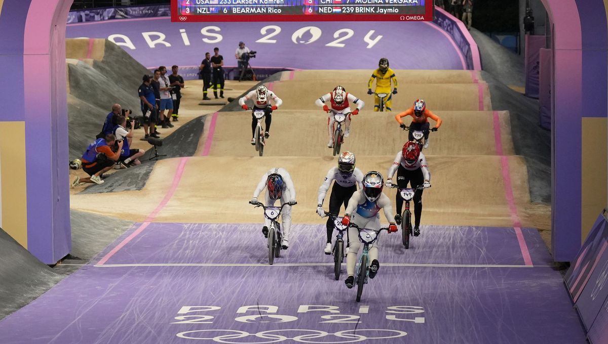

HISTOIRE DE CE SPORT
Le BMX apparaît dans les années 1960-70, en Californie. Il est le fruit de l’imagination des jeunes, qui ont transformé leurs vélos en machines de course en s’inspirant du motocross, en plein essor à l’époque.
Ce qui a commencé comme des courses informelles sur des terrains vagues s’est rapidement transformé en une passion dévorante. Dans les années 1970, des compétitions mieux organisées émergent. La première piste permanente sera construite en Californie.
Les années 1980 ont marqué un tournant décisif pour le BMX Race. La discipline connait une croissance fulgurante. Elle est soutenue par de nouveaux fabricants de vélos spécialisés. L’UCI reconnait le potentiel du BMX Race en 1981 et ouvre la voie à des compétitions internationales de premier plan. Le film E.T. de Spielberg, sorti en 1982, joue un rôle dans la popularisation du BMX. Les enfants et les adolescents sont inspirés par les cascades à vélo du film. Il a captivé l’imagination des spectateurs avec ses scènes emblématiques mettant en vedette des jeunes passionnés de BMX.
Les années 1990 ont vu le BMX Race prendre son envol. Les courses sont de plus en plus intenses. Des champions de renommée mondiale émergent. L’UCI organise le 1er championnat du monde de BMX Race en 1993.
En 2008, le BMX Race a conquis les Jeux olympiques de Pékin. Il reçoit la reconnaissance mondiale tant attendue. Depuis lors, cette discipline spectaculaire ne cesse de gagner en popularité, avec des pistes de plus en plus techniques, des athlètes de haut niveau et une communauté de passionnés.
PARTICIPATION AUX JEUX
Le BMX Race, dans sa version supercross, devient discipline olympique aux JO de Pékin en 2008. Anne-Caroline Chausson deviendra alors la 1ère championne olympique de l’histoire. Laëtitia Le Corguillé sera vice-championne olympique.
DÉROULEMENT DE L'ÉPREUVE AUX JO PARIS 2024
Le BMX racing est beaucoup plus nerveux dans son format que les disciplines classiques du cyclisme. Quand ces dernières représentent souvent des efforts d’endurance durant plusieurs minutes, le BMX racing est un effort court et intense de quelques dizaines de secondes.
Les participants sont par huit sur une piste mêlant sauts, virages et obstacles, où le plus rapide et réactif l’emporte.
Les coureurs s’élancent d’une butte de huit mètres de hauteur sur une piste de 400m de long, et peuvent atteindre les 60 km/h. La réactivité et l’explosivité des athlètes sont primordiales pour jaillir en tête de la grille de départ, et ensuite conserver la tête de la course.
Le final de la course est généralement haletant et passionnant à suivre pour le public.
RÉSULTAT PODIUM DE L'ÉPREUVE AUX JO PARIS 2024
| Résultats | |||
|---|---|---|---|
| OR | ARGENT | BRONZE | |
| Femmes |
S. Sakakibara
Discipline : BMX Racing Temps : 34.231 secondes |
M. Veenstra
Discipline : BMX Racing Temps : 34.954 secondes |
Z. Claessens
Discipline : BMX Racing Temps : 35.060 secondes |
| Hommes |
J. Daudet
Discipline : BMX Racing Temps : 31.422 secondes |
S. Andre
Discipline : BMX Racing Temps : 31.706 secondes |
R. Mahieu
Discipline : BMX Racing Temps : 32.022 secondes |
ÉVENTUELS RECORDS BATTUS
Athlète.s
Pour la première fois dans l'histoire de ce sport, c'est un triplé français qui remporte le podium des JO de Paris 2024.
| Joris Daudet | ||
|---|---|---|
| Performance sur épreuve | ||
| 31.422 | ||
| Sylvain André | ||
|---|---|---|
| Performance sur épreuve | ||
| 31.706 | ||
| Romain Mahieu | ||
|---|---|---|
| Performance sur épreuve | ||
| 32.022 | ||
Pays
| Les records par pays dans cette épreuve | ||
|---|---|---|
| Classement | Pays | Points |
| 1ER | France | 6436 |
| 2E | Suisse | 5701 |
| 3E | États-Unis | 4961 |
PLANNING DES PHASES
| Planning | ||
|---|---|---|
| Date | Epreuve | Heure |
| 1er Août 2024 | Hommes Quarts de finale Manche 1 #1 | 20h |
| Hommes Quarts de finale Manche 1 #2 | 20h05 | |
| Hommes Quarts de finale Manche 1 #3 | 20h10 | |
| Femmes Quarts de finale Manche 1 #1 | 20h20 | |
| Femmes Quarts de finale Manche 1 #2 | 20h25 | |
| Femmes Quarts de finale Manche 1 #3 | 20h30 | |
| Hommes Quarts de finale Manche 1 #1 | 20h | |
| Hommes Quarts de finale Manche 1 #1 | 20h | |
| Hommes Quarts de finale Manche 2 #1 | 20h40 | |
| Hommes Quarts de finale Manche 2 #2 | 20h45 | |
| Hommes Quarts de finale Manche 2 #3 | 20h50 | |
| Femmes Quarts de finale Manche 2 #1 | 21h | |
| Femmes Quarts de finale Manche 2 #2 | 21h05 | |
| Femmes Quarts de finale Manche 2 #3 | 21h10 | |
| Hommes Quarts de finale Manche 3 #1 | 21h20 | |
| Hommes Quarts de finale Manche 3 #2 | 21h25 | |
| Hommes Quarts de finale Manche 3 #3 | 21h30 | |
| Femmes Quarts de finale Manche 3 #1 | 21h40 | |
| Femmes Quarts de finale Manche 3 #2 | 21h45 | |
| Femmes Quarts de finale Manche 3 #3 | 21h50 | |
| Hommes Repêchage | 22h05 | |
| Femmes Repêchage | 22h15 | |
| 2 Août 2024 | Hommes Demi-finales Manche 1 #1 | 20h |
| Hommes Demi-finales Manche 1 #2 | 20h05 | |
| Femmes Demi-finales Manche 1 #1 | 20h15 | |
| Femmes Demi-finales Manche 1 #2 | 20h20 | |
| Hommes Demi-finales Manche 2 #1 | 20h30 | |
| Hommes Demi-finales Manche 2 #2 | 20h35 | |
| Femmes Demi-finales Manche 2 #1 | 20h45 | |
| Femmes Demi-finales Manche 2 #2 | 20h50 | |
| Hommes Demi-finales Manche 3 #1 | 21h | |
| Hommes Demi-finales Manche 3 #2 | 21h05 | |
| Femmes Demi-finales Manche 3 #1 | 21h15 | |
| Femmes Demi-finales Manche 3 #2 | 21h20 | |
| Hommes Finale | 21h35 | |
| Femmes Finale | 21h50 | |
ÉVOLUTION DU BMX DANS L'HISTOIRE DES JO
Le BMX est inscrit au programme des Jeux olympiques d'été à Beijing, en Chine, avec une course individuelle pour les hommes et une pour les femmes. En 2021, le BMX freestyle fait son apparition avec une épreuve masculine et une épreuve féminine. Chaque course de BMX Race est disputée par 8 coureurs et le premier arrivé gagne la course. Dans chaque épreuve de BMX freestyle, le coureur avec le plus de points gagne la manche.
OBSERVATIONS DE CERTAINS PARTICIPANTS VENUS AUX JO PARIS 2024
Près de 70 coureurs se sont rendus au Stade de BMX de Saint-Quentin-en-Yvelines, en France, du 4 au 7 avril, pour découvrir la piste sur laquelle ils s’affronteront dans quatre mois lors des Jeux Olympiques de Paris 2024.
Hôte de la Coupe du Monde BMX Supercross UCI (c’était son nom à l’époque) en 2018 et 2019, la piste de Saint-Quentin-en-Yvelines a été récemment reconstruite, avec notamment des changements dans toutes les lignes droites. Technique et étroite, elle donne lieu à des courses rapides et groupées.
L'événement et la piste ont recueilli les suffrages des participants:
Le Britannique Ross Cullen a remporté l'épreuve des Hommes Elite à Saint-Quentin-en-Yvelines, mais il ne se laisse pas griser par son succès : « L'objectif est toujours de se qualifier pour aller aux Jeux. Evidemment, rien n'est confirmé, alors nous allons d'abord cocher les cases qui nous séparent de cet objectif. Essayons d'être sur la ligne de départ et nous nous occuperons du reste au fur et à mesure, mais c'est sûr que c'est une bonne dose de confiance et d'expérience. J'adore la piste, c'est une excellente installation à mes yeux ».
Voici quelques observations d'autres candidats aux Jeux Olympiques ayant participé à l'épreuve de test opérationnel de Paris 2024 :
Simon Marquart (SUI), Champion du Monde UCI 2022 : « La tension monte. Cela se rapproche. Je suis vraiment excité et j'apprécie d'être ici. Chaque jour ressemble un peu plus aux Jeux Olympiques, ce qui est vraiment cool. Il s'agit avant tout d’engranger de l’expérience, mais aussi de donner le ton et de se montrer à soi-même que l'on est sur la bonne voie ».
Carlos Ramírez (COL), médaillé de bronze aux JO Rio 2016 et de Tokyo 2020 : « C'est une piste différente par rapport aux autres Jeux Olympiques auxquels nous avons participé. Elle est un peu plus étroite, je dirais même un peu plus technique. J'ai hâte d'être ici, de représenter mon pays et, évidemment, de me battre pour une médaille ».
Zoé Claessens (SUI), Championne d'Europe : « La piste est vraiment bonne, elle est très technique. Je l'aime beaucoup. Pour moi, cette épreuve test est très importante. C'est une course sur la piste olympique, alors nous pouvons acquérir un peu plus d'expérience sur cette piste... c'est bien de venir ici une fois avant les Jeux Olympiques et de se faire une idée de l'endroit ».